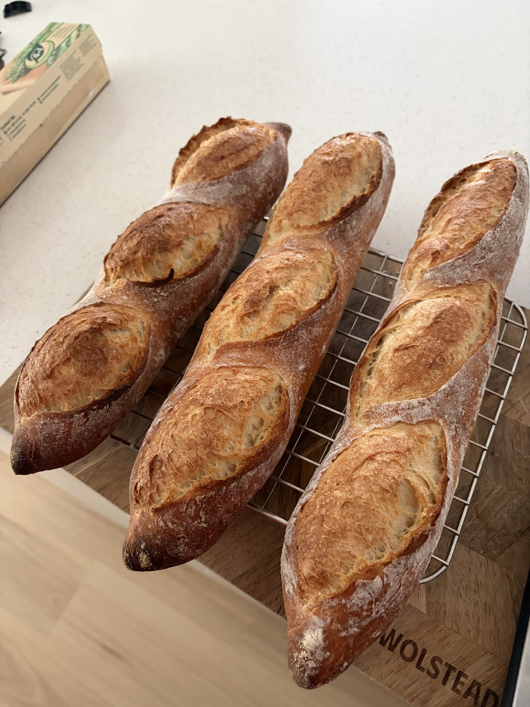

Poolish
hydration
72
%
↗ Share
Poolish
Baguettes
Miller & Baker · Yitpi
·
4 × 250g
· cold retard · 18°C

Cook along →
See the method
Poolish
Mix
Bulk
Retard
Shape
Bake
Batch
Quantity
−
+
Weight each (g)
−
+
Dough
Flour A
Miller & Baker Plain Flour
Caputo Pizzeria Blue (12.5%)
Caputo Nuvola (13%)
Strong Bread (12–13%)
Wholemeal Wheat
%
+ Blend a second flour
Flour B
Miller & Baker Plain Flour
Caputo Pizzeria Blue (12.5%)
Caputo Nuvola (13%)
Strong Bread (12–13%)
Wholemeal Wheat
%
Flour blend
100% A / 0% B
Hydration %
?
−
+
Poolish %
?
−
+
Environment
Room Temp (°C)
−
+
Method
?
Cold Retard
Same Day
Shaped Retard
Advanced · flour tuning
▾
Bowl
τ water cooling
?
Metal
Glass
Plastic tub
Folds
?
−
+
Pre-mix rest (min)
?
−
+
Minimum bench rest (min)
?
−
+
Development
?
Gentle
Standard
Intensive
Diastatic malt
?
Off
0.25%
0.5%
Fridge time after shaping (hrs)
?
−
+
Cook along
✕ Done
Poolish
1 / 9
←
Mark done →
×
×
Cold Retard vs Same Day
Cold Retard
More complex, nutty flavour
Better crust blistering & browning
More open, irregular crumb
Cold dough = easier to shape
Takes 2 days total
Same Day
Good baguettes, milder wheaty flavour
Decent crust, less blistering
Tighter, more even crumb
Warm dough = stickier to shape
Done in ~5–6 hrs after poolish
Shaped Retard
Complex flavour, closer to Cold Retard
Great blistering; cold dough scores cleanly
Open, irregular crumb
Shape once, no second warm handling
Bake straight from the fridge — no morning wait